| Version History |
| Introduction |
| Adding the Overlay Boundary |
| Re-using Polygons |
| Creating the Overlay |
| Cutting Holes in the Overlay |
| Removing an Overlay |
| 1.0 | Initial release | |
| 1.1 | Added 'r' suffix note in 'Creating the Overlay' | |
| 1.2 | Minor changes to the layout | |
| 'Cutting Holes in the Overlay' added | ||
| 1.3 | 'Removing an Overlay' added | |
| 1.4 | 'Cutting Holes in the Overlay' updated | |
| 1.5 | Wed editing note added to 'Adding the Overlay Boundary' | |
| 1.6 | Re-using Polygons section added | |
| 1.7 | 'Cutting Holes in the Overlay' updated with more detail | |
| Minor tidying up and re-detailing throughout the text | ||
| 2.0 | Re-using Polygons section moved to Area Basics | |
| 2.1 | Note added about PVRZ tiles and tis2ovl |
This overlay tutorial only applies to the original Infinity Engine games and NOT to the Extended Editions because the EE versions use a different tile overlay (PVRZ). On initial release the EE versions were able to display OE tilesets but at some point that ability was removed. You can still use this tutorial to create new tilesets for the EE versions but you will need the OE games to create the tileset and then a copy of tis2ovl by Argent77 to convert from TIS to PVRZ. I'm not providing a link because of the possibility of link rot, so please use a search engine to find tis2ovl.
Overlays are generally large areas of a repeating multi-frame texture that is meant to represent a moving body e.g. water or lava. There are five overlays available for each area and as overlay one is always taken up by the main area tileset, there is only room for four more overlays. Be aware of this during your area creation planning.
I have no idea where you will be creating your mod, so I am going to assume that all of the relevant files are in your \bg2\override directory.
Unless you've changed your browser fonts to something weird and wonderful, the conventions in this tutorial are that Times New Roman is 'descriptive' text and Arial Bold is 'action' text. Alternatively, black is descriptive and blue is action.
| Re-using Polygons |
| Creating the Overlay |
| Cutting Holes in the Overlay |
| Removing an Overlay |
Before we continue, there are a few things that you must be aware of if you are creating an area that has a night area. This tutorial deals with the day .wed only because otherwise it would have the same information repeated twice each time we edit the .wed. So, whenever I say 'Edit .wed', there are additional steps that you must take to ensure that the night area will work also. Whenever I tell you to exit the .wed screen, you MUST MUST MUST save the area. You must then select the 'Night wed' button and repeat the .wed editing we have just done. What you are doing is building two weds - day and night - in parallel. Again, when you exit the night wed screen, you MUST MUST MUST save the area before continuing onto the next section. Failure to do so will mean the loss of ALL the .wed editing you have just done.
Finally, the last selected .wed editing button will influence the Preview screen for aspects of editing. If your last selection was 'Night wed' and you want to see the day .tis in the Preview screens,
and when the Edit Wed screen comes up,
This will reset the Preview .tis.
DLTCEP uses the Wallgroup polygon editor to create the outline of the overlay area. If you know that your overlay needs to have cutouts or holes made in it, then before proceeding any further here scroll down and read the 'Preparation' section of 'Cutting Holes in the Overlay'. Then come back here.
Start DLTCEP if you haven't already done so
As this is an already-started area, the name of the associated .wed file should automatically appear in the wedfile box.
|
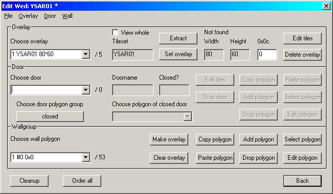 Image 1 - the .wed screen |
The bottom third of this screen is devoted to adding and modifying walls. We're adding a new wall polygon, so keep an eye on the combobox at bottom left and
The combobox label at bottom left should now have incremented the number of polygons by one and added the new polygon in position zero i.e. it's the one that says '1 #0 0x0' in the information box. The screenshot also shows that the base tileset (ysar01) is showing as the first overlay.
The Edit Polygon dialog box should now be active on your screen.
|
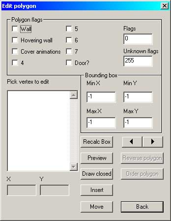 Image 2 - The Polygon Editor |
The button will stay down, indicating that currently you are in Insert mode and not in Modify mode. We'll come to that one soon.
The top left of your area tileset will be displayed. Scroll the picture to where you want the overlay to be and position the cursor to where you want to add the first vertex. A vertex is essentially a point that defines an x,y co-ordinate; in our case, we're using vertices to mark the edges of a boundary. Left-click, then move to the next point and click again; the line joining the two points is blue. Avenger defines the blue line as the baseline of the polygon; all other subsequent lines connecting individual vertices are green. Select and click on the third point and you have two green lines and the blue baseline. Confused? I thought so''
I'm going to add the river overlay to my new area. I have set the baseline across the mouth of the cave and have added the first non-baseline vertex. As I add each vertex it gets listed in the main Edit screen.
|
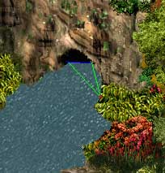 Image 3 - The cave mouth |
As I add more vertices the polygon continues to expand to take them up. There will come times when the polygon boundaries cross each other - don't worry about this because most times they will uncross again as you continue. If they don't, DLTCEP can deal with them without problems.
|
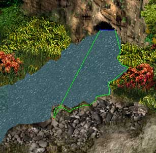 Image 4 - Crossed Lines |
When adding water, my preference is to attempt to give some form of visual depth to it where it meets the land. This involves really knowing the topography of the area you are creating; look carefully at Image 4 and you'll see that initially the boundary carefully follows the edges of the flowers because this is part of a high rock bank but where it meets the small spit of land comprising stones and sand, I have overlapped the boundary onto the low-lying land.
|
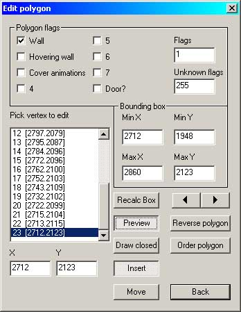 Image 5 - Loads of Vertices!! |
Okay, keep going until you have completely defined your boundary polygon. At any time you can check exactly where your overlay will be by clicking on 'Floodfill' on the Preview screen.
|
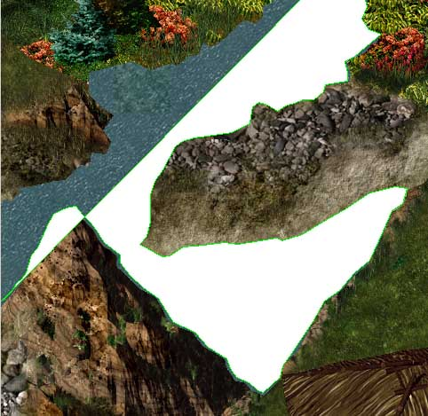 Image 6 - Floodfill |
Once I finish my boundary I check it carefully to ensure that it goes exactly where I need it. Down in one area I have made a mistake; there is low-lying land and the boundary does not run up onto it.
|
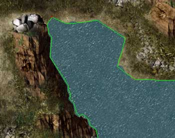 Image 7 - No water overlap |
The button comes up and you are now in Modify mode. Each time you click on a vertex in the 'Pick vertex to edit' listing, that vertex shows as a red dot on the Preview pane. With a bit of trial-and-error I located the start of the faulty area - see Image 7. I then positioned the cursor where I really wanted the vertex to be and left-clicked to move it, working my way down the vertex list until I had redefined that part of the boundary.
|
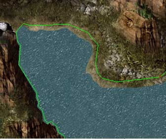 Image 8 - Redefined Boundary |
When you are finished with the boundary,
to return to the .wed editor.
| Adding the Overlay Boundary |
| Re-using Polygons |
| Cutting Holes in the Overlay |
| Removing an Overlay |
The Wallgroup section will now show the number of vertices in the polygon you have just created. Do not change this selection because this is the polygon we want to set as the overlay.
Go to the top third of the screen; the area labeled 'Overlay' - see Image 1.
Select the next available overlay by using the dropdown box in 'Choose Overlay'.
The 'Edit Tis' page will pop up.
|
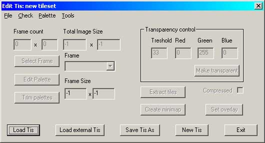 Image 9 - the Tis Editor |
You have a group of choices here. You can
You've probably realized from the screenshots that I've created entirely new textures for the water and so have also created a new overlay texture to go with them. Not quite: what I actually did was to export the original WTRIV and WTRIVR textures and modify them in PhotoshopCS. I'm not a fan of the bright blue water that comes with the Infinity Engine and so I toned it all down to be a bit closer to the bottle green of the rivers that I'm familiar with, while at the same time retaining a nod in the direction of what most people expect to see.
I'm going to take the long way round here and import my modified WTRIV bitmap called 'ysriv.bmp'. DO NOT FORGET that if you create your own water textures, ALL water textures require a second, rain, texture denoted by the suffix 'r'. In my case then, I needed a second river texture for a river being rained on - again, I simply edited the existing WTRIVR texture and renamed it 'ysrivr.bmp'.
Navigate to the bitmap and doubleclick on it. DLTCEP will import the bitmap and convert to a tileset at the same time. The information box will tell you how much information has been lost in the compression/conversion process. A preview screen will pop showing how the bitmap divides into tiles.
|
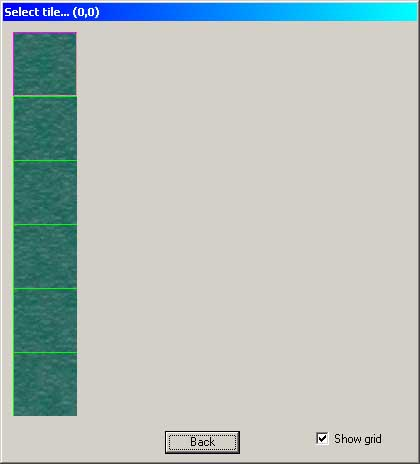 Image 10 - New .tis Preview |
You may want to simply use an existing overlay and the best way to find these is to launch Near Infinity, select 'Tis' and scroll down the listing. The overlay files are all prefixed 'WT'. Once you've selected or imported your tileset,
For some reason the confirmation popup box always appears and it doesn't matter whether you are importing a new tis bitmap or are using an existing tileset. Click on whichever button applies; if using an existing tileset then it will always be No. The only time I can think of that you would say Yes is if you are importing a modified bitmap to overwrite a tileset that you have already created. This was the case here ' ysriv.tis already existed.
The Tis Editor will close and the Overlay section of the Wed Editor will now list the overlay tileset.
|
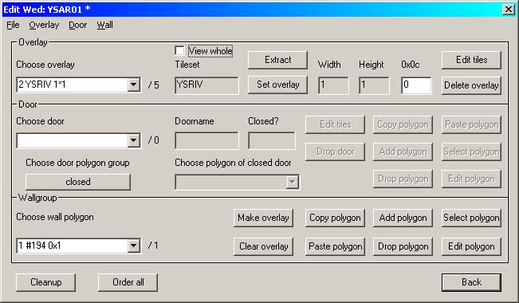 Image 11 - Set but not Fixed |
The overlay is now set but it is still not fixed into the .wed file. The final move is to go to the Wallgroup section and
Have patience as this can take a while and there is no progress indicator. If all goes well you will eventually see this:
|
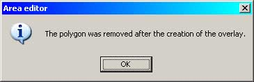 Image 12 - Done |
To preview your new overlay,
- and scroll to the overlay area. Here it is:
|
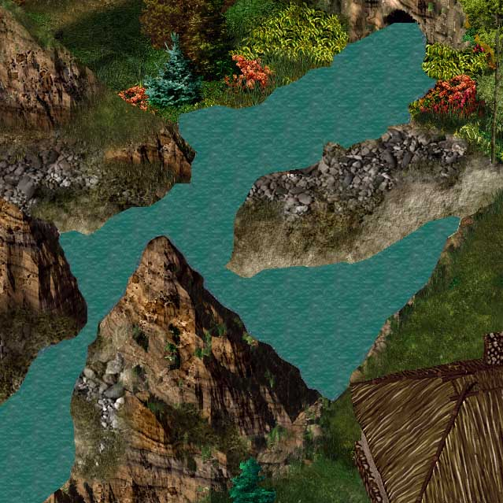 Image 13 - New River Preview |
Fire up BG2 and go take a look - no need to close DLTCEP.
|
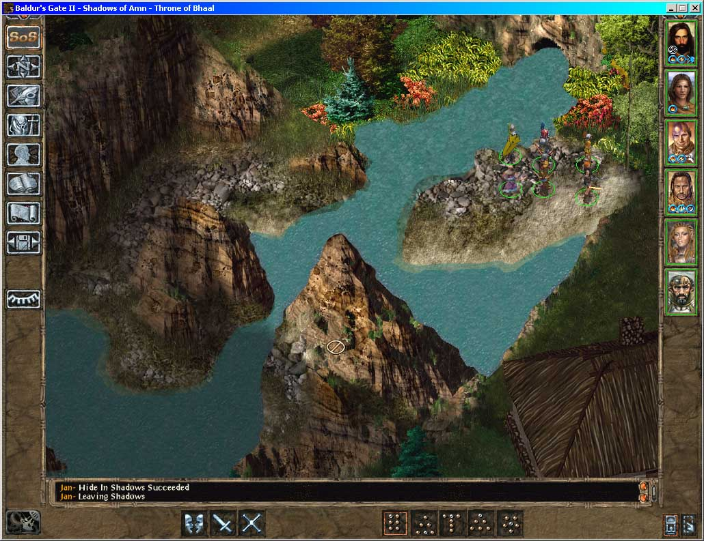 Image 14 - In Game |
See where I've overlapped the edges of the land into the river overlay? IMHO this looks a lot better than just taking the river to the land edges ' it gives it a greater feel both of depth and 3D. A greater improvement still would be for me to blend the edges of the land into the riverbed - another day perhaps - before the mod release!
| Adding the Overlay Boundary |
| Creating the Overlay |
| Removing an Overlay |
So suppose your overlay doesn't cover the whole of an area and it has holes in it - perhaps an island in a lake. Be sure to do this next step immediately after clicking 'Make Overlay' - in theory you can do it later, but I couldn't get it to work if I went off and did something else in DLTCEP and then came back later.
Preparation
To get really accurate holes you need to do some preparation before even adding the overlay. The reason is quite simple; if you try and do it when the overlay has been added, you will invariably find that showing the preview in DLTCEP will cover up the area you need to define as a cutout. Decide which areas are going to show through the overlay and note them; for me here it was simply the small island in the middle of the river. Next (refer back to Image 13),The Polygon Editor (Image 2) will pop up again.
-to bring up the preview screen. Very carefully create the outline of the area you want to cut out of the overlay, then
and without touching anything else, to remove it. All we needed was the definition of the polygon and not the polygon itself. Rinse and repeat as necessary. 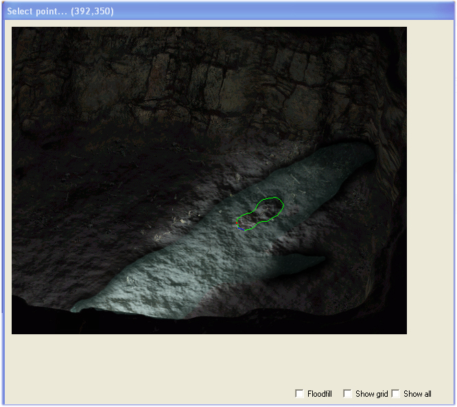 Image 15 - The island cutout
Cutting the hole
Assuming now that you have gone through all of the above to add the overlay, we will now go on and cut the hole in it to match the island.
The Polygon Editor (Image 2) will pop up again. -to bring up the preview screen. You will be shown the overlay you have just created. and select the cutout polygon you saved earlier. If you think this one isn't the same shape as Image 15, you're right - I forgot to save it and had to do it all again.... 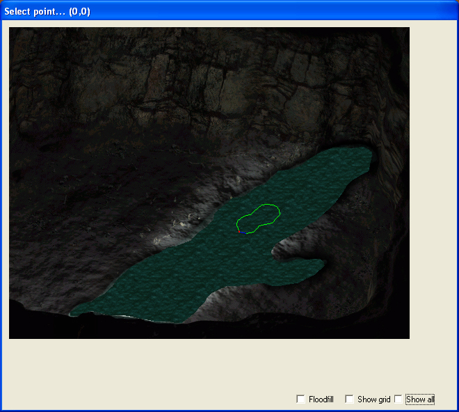 Image 16 - The cutout polygon -and you should get the same message as for 'Create Overlay'. To preview your modified overlay, - and scroll to the overlay area. Here is the modified overlay in a cave under my seatown - you can see the entrance in the in-game screenshot above: 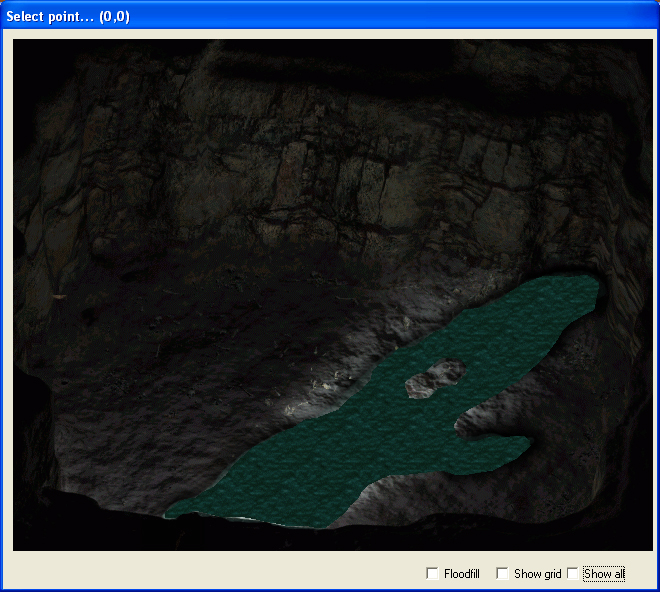 Image 17 - Holes in the overlay - and the same area in the game: 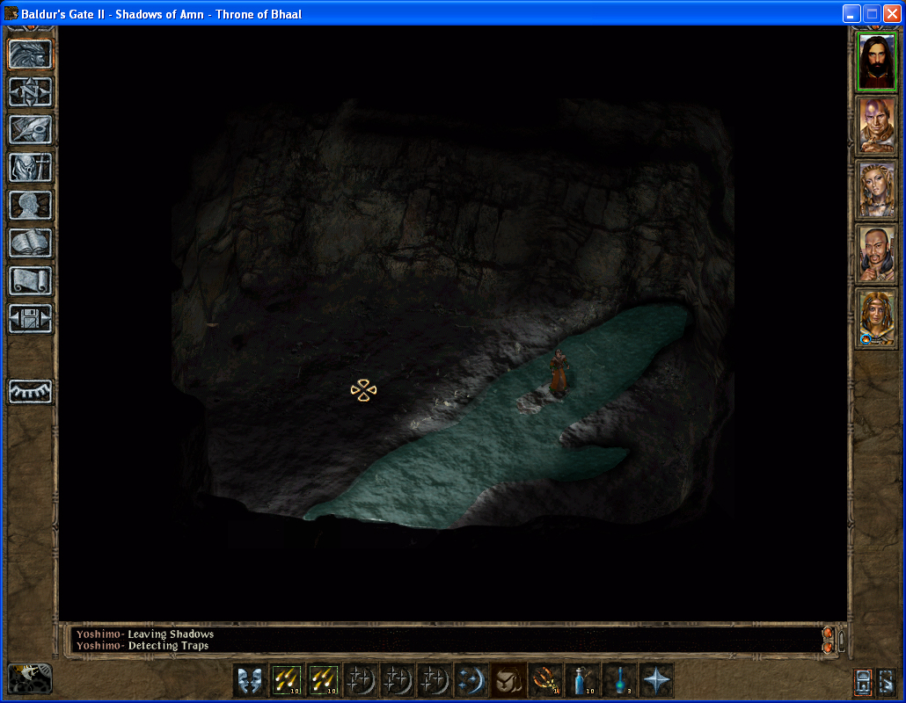 Image 18 - Wet feet Now, having said all that, there is a way to avoid having to cut a hole in the overlay but you have to be absolutely pixel-perfect. Not one pixel here or one pixel there, but absolutely and completely pixel-perfect
in your placement. Look at Image 19. 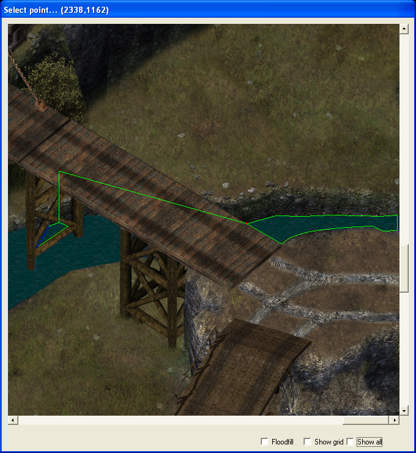 Image 19 - Overlay Outline I had a tiny part of the river to add (seen through the legs of the bridge support) along with a short end-piece on the right of the screen. What appears to be a single line joining the two overlay boundary
areas is actually two lines laid exactly one on top of another. If you look at Image 5 you will see at the bottom of the vertex box two seperate boxes listing the x and y co-ordinate of the currently-selected
vertex. Use these two boxes to manually enter the pixel co-ordinates to line up the 'return' lines with the 'outbound' lines. If you miss by so much as one pixel, DLTCEP will quite happily draw the overlay
one pixel wide in that area. Oh yes; if you've identified this screenshot as another in-DLTCEP check on an overlay, you're quite right. I wasn't sure if this would work, so I tried it first and then went back to redraw the overlay boundary
for the screenshot!
| Adding the Overlay Boundary |
| Re-using Polygons |
| Creating the Overlay |
| Cutting Holes in the Overlay |
This is not quite as intuitive as you think it should be; it took me a long time to figure this and so you will please forgive me if the screenshots aren't quite as clever as they could be - I really didn't want to go back and do this again.
BIG NOTE (please!). This refers only to overlays 2 through 5 and NOT to the primary area overlay.
Why would you need to delete an overlay? Well, in my case and for some reason best known to itself, the Infinity Engine decided it couldn't find a resource that it had always been quite happy with up until that moment. The resource in question happened to be a water overlay and was very definately in the \override folder, so maybe the IE was just having an off day - nothing new about that, I guess. Having run the problem down to being this overlay, I couldn't face building the area up again so deleting it was the only option..... as it turned out, it might have been faster just to rebuild the area from scratch.
Start DLTCEP if you haven't already done so
The name of the associated .wed file should automatically appear in the wedfile box.
See image 1 at this point if you need reminding.
|
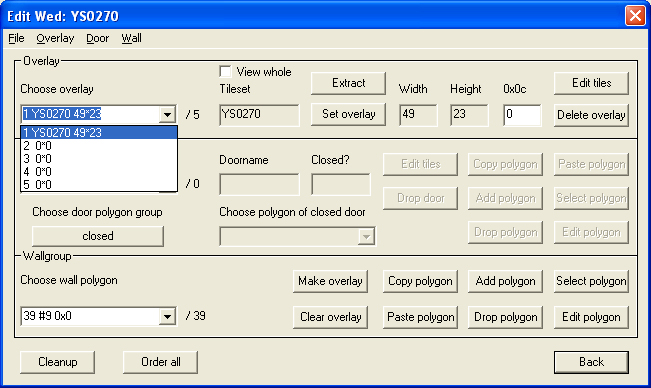 Image 20 - Deleting the Overlay |
In my case I needed to delete overlay 2 and as you can see, it's already gone.... told you I couldn't be bothered to go back and re-edit the area. I have absolutely NO idea what will happen if you have (say) overlays 2 and 3 and you need to delete overlay 2. I'm not even going to hazard a guess.
The problem here is we still need to delete the tiles associated with that overlay.
The 'Edit Tiles & Overlays' dialog will come up. The obvious thing to do would be to select the overlay's associated tiles and click on 'Drop Alternative'; don't - it doesn't work.
DLTCEP will present you with a set of off-white squares where the overlay used to be.
|
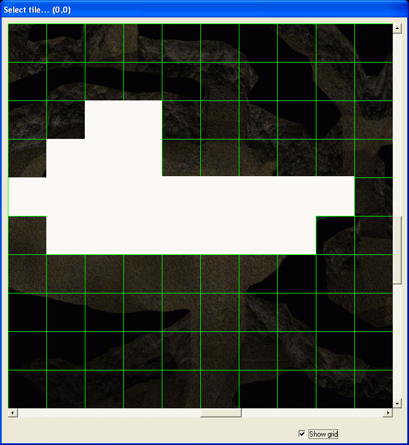 Image 21 - The remains of the overlay |
|
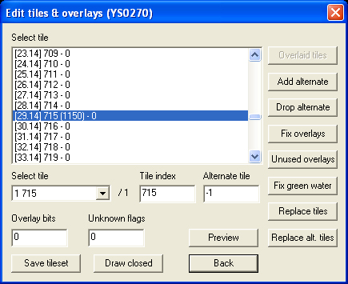 Image 22 - Deleting the alternative tiles |
When you have manually deleted all of the required alternative tiles in this fashion :-
Now go ahead and add the correct/new overlay, starting again from the top.
|
Tutorial written by Yovaneth, apprentic'd at Candlekeep during the Bhaalspawn Troubles. Post it where you will but please don't take credit for what you have not written. |